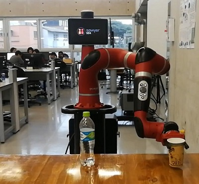
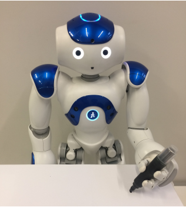
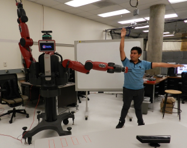
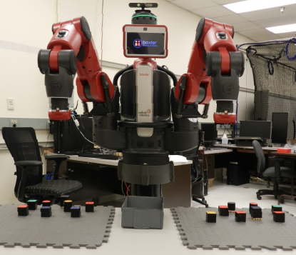
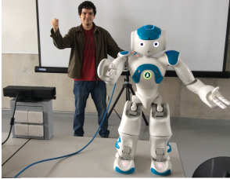

Uncategorized PUBLICACIONES-PAPER 2018 Optimal Time-Jerk Trajectory Generation for Robot Manipulators  Conferencia: Colombian Conference on Robotics and Automation (CCRA) Lugar, fecha:Colombia. Noviembre, 2018. PaperDescargar 2017 Image-driven drawing system by a NAO robot  Conferencia: Electronic Congress (E-CON UNI) Lugar, fecha:Lima. Noviembre, 2017. paperDescargar Real-time teleoperation with the Baxter robot and the Kinect sensor  Conferencia: Colombian Conference on Automatic Control (CCAC) Lugar, fecha:Lima. Octubre, 2017. paperDescargar Flexible visually-driven object classification using the baxter robot  Conferencia: International Conference on Electronics, Electrical Engineering and Computing (INTERCON) Lugar, fecha:Lima. Agosto, 2017. paperDescargar 2016 Telepresence using the kinect sensor and the nao robot  Conferencia: IEEE Latin American Symposium on Circuits & Systems (LASCAS) Lugar, fecha:Brasil. Abril, 2016. paperDescargar February 20, 2020 admin